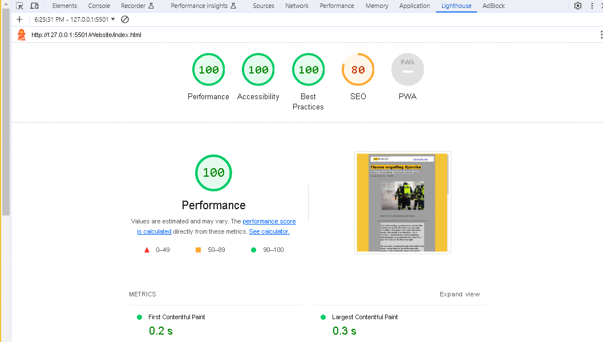
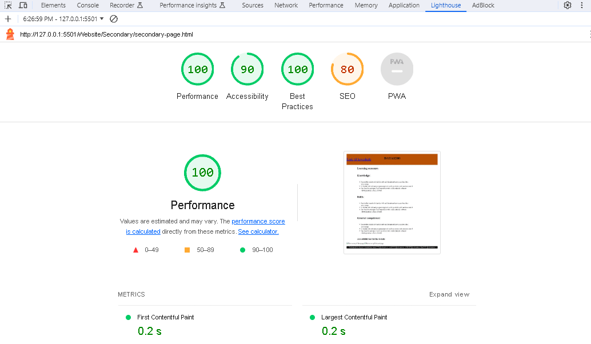

Learning outcomes
Knowledge:
- knows the central role that the web and the internet have in modern data processing
- is familiar with relevant programming tools and repositories with version control
- has basic knowledge of and experience with collaboration in software development as a form of work
Skills:
- knows the central role that the web and the internet have in modern data processing
- is familiar with relevant programming tools and repositories with version control
- has basic knowledge of and experience with collaboration in software development as a form of work
General competence:
- knows the central role that the web and the internet have in modern data processing
- is familiar with relevant programming tools and repositories with version control
- has basic knowledge of and experience with collaboration in software development as a form of work
Accessibility test for the website

